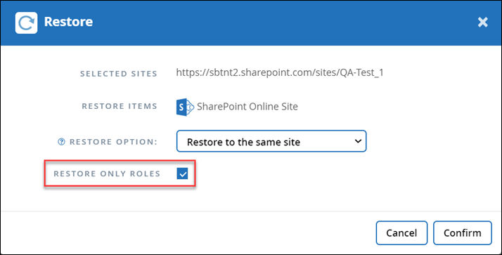

Richiedi modifiche alla documentazione
Richiedi modifiche alla documentazione Modifica questa pagina
Modifica questa pagina Scopri come collaborare
Scopri come collaborareEseguire un ripristino del servizio di alto livello
Collaboratori
Seguire la stessa procedura per eseguire ripristini di alto livello delle cassette postali per Microsoft Exchange Online, MySites per Microsoft OneDrive for Business, siti per Microsoft SharePoint Online e gruppi Microsoft 365.
Per impostazione predefinita, solo il backup più recente è disponibile per il ripristino. Altre opzioni disponibili includono:

-
Dalla dashboard, fare clic sul numero riportato sopra PROTECTED nella casella del servizio per il quale si desidera eseguire il ripristino.
-
Selezionare il nome della casella postale, del gruppo, del team, di MySite o del sito da ripristinare.
-
Selezionare un’opzione di ripristino:

Se si seleziona l’opzione di ripristino Export to PST (Esporta in PST), il collegamento fornito è valido per sette giorni e viene pre-autenticato. -
Se si ripristinano le cassette postali per Microsoft Exchange Online, selezionare una delle seguenti opzioni:
Il ripristino delle caselle postali con messaggi di dimensioni superiori a 140 MB potrebbe causare errori di caricamento nel server. Si consiglia di eseguire un ripristino di alto livello utilizzando l’opzione Export to PST (Esporta in PST). Per ulteriori informazioni, vedere "Limiti online di Microsoft Exchange: Limiti dei messaggi". -
Ripristinare nella stessa mailbox
-
Export to PST (Esporta in PST) se si esporta in PST, al termine dell’esportazione viene inviata un’email di notifica con la posizione del file PST.
-
Restore to another mailbox (Ripristina su un’altra mailbox): Se si esegue il ripristino su un’altra mailbox, è necessario inserire la mailbox di destinazione nel campo di ricerca. È possibile digitare una parte dell’indirizzo di posta elettronica di destinazione nel campo di ricerca per avviare una ricerca automatica delle caselle postali di destinazione corrispondenti.
-
-
Se si ripristinano gruppi per gruppi Microsoft Office 365, selezionare una delle seguenti opzioni:
-
Ripristinare nello stesso gruppo
-
Ripristinare in un altro gruppo
-
Esportare i dati se si esporta, viene creato un file PST con i file Microsoft Exchange e un file .zip con i siti Microsoft SharePoint. Riceverai un’e-mail di notifica contenente la posizione del file PST e un URL autenticato nella posizione del file .zip.
-
-
Se si ripristinano i raggruppamenti in Microsoft Office 365 Groups, selezionare una delle seguenti opzioni:
-
Ripristinare nello stesso team
-
Ripristina in un altro team questa opzione è ideale per le situazioni in cui un team viene cancellato da Microsoft 365. Creare un nuovo team per utilizzare questa opzione di ripristino. Se di recente hai creato un nuovo team in MS Team, scoprilo sincronizzando il servizio. Andare a Services Settings (Impostazioni servizi) a sinistra. Fare clic su Office 365. In Manage Services (Gestisci servizi), fare clic su Sync Now for Microsoft 365 Groups (Sincronizza ora* per gruppi Microsoft).
-
Esportare i dati se si esportano dati, è necessario scaricarli. Accedere a Reporting (rapporti) nel menu di sinistra. Trova il tuo lavoro di esportazione dei dati. Fare clic su Total Folders (cartelle totali). Quindi fare clic su Export Data Download link. Un file zip viene scaricato. Aprire il file zip per estrarre i dati.
-
-
Se stai ripristinando MySites per Microsoft OneDrive for Business, seleziona una delle seguenti opzioni:
-
Ripristinare sullo stesso MySite
-
Restore to a different MySite (Ripristina su un sito MySite diverso): Se si esegue il ripristino su un sito MySite diverso, inserire il sito MySite di destinazione nel campo di ricerca. È possibile digitare una parte del MySite di destinazione nel campo di ricerca per avviare una ricerca automatica dei MySites di destinazione corrispondenti.
-
Esportare i dati se si esporta, viene creato un file .zip con MySites. Si riceverà un’e-mail di notifica contenente un URL autenticato nella posizione del file .zip.
-
-
Se si stanno ripristinando siti per Microsoft SharePoint Online, selezionare una delle seguenti opzioni:
-
Ripristina nello stesso sito se si seleziona Ripristina solo ruoli, vengono ripristinati solo i ruoli e le autorizzazioni.

-
Restore to another site (Ripristina su un altro sito): Se si esegue il ripristino su un altro sito, inserire il sito di destinazione nel campo di ricerca. È possibile digitare una parte del sito di destinazione nel campo di ricerca per avviare una ricerca automatica dei siti di destinazione corrispondenti.
-
Esportare i dati se si esporta, viene creato un file .zip con la raccolta di siti. Si riceverà un’e-mail di notifica contenente un URL autenticato nella posizione del file .zip.
-
-
-
Fare clic su Conferma. Viene visualizzato un messaggio che indica che il processo di ripristino è stato creato.
-
Fare clic su View the job progress (Visualizza avanzamento del processo) per monitorare l’avanzamento del ripristino.